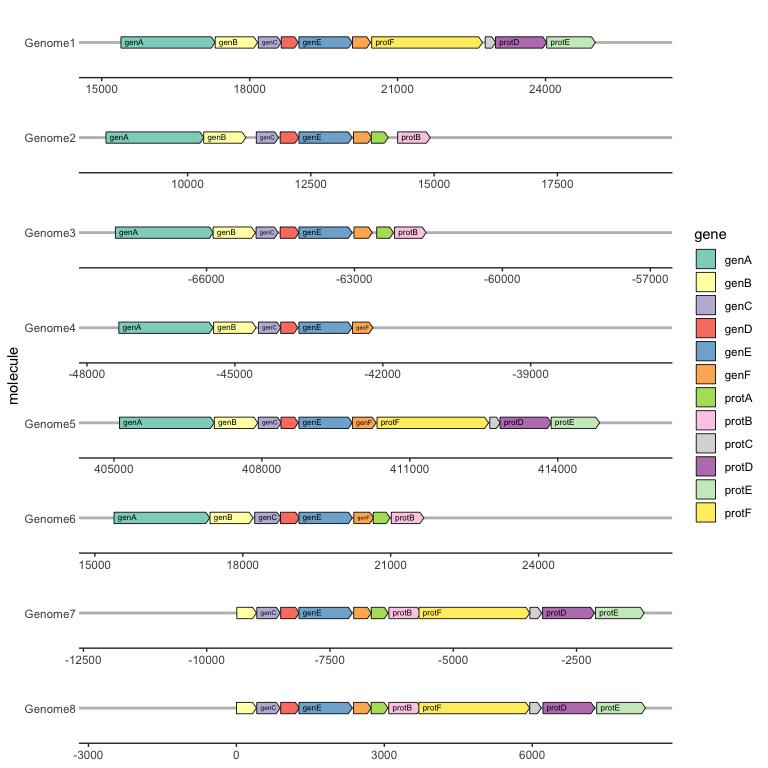
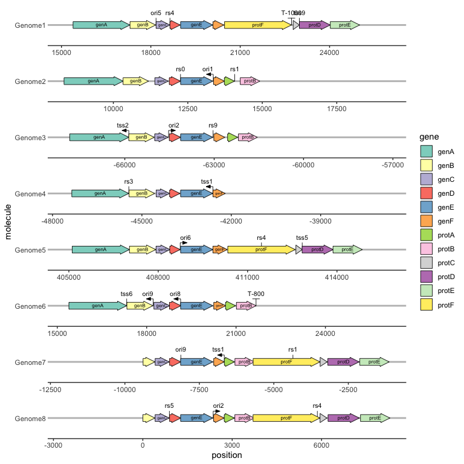

gggenes is a ggplot2 extension for drawing gene arrow maps.
Breaking change to linewidth in version 0.6.0.9001
Prior to version 0.6.0.9001, linewidth in geom_feature() and geom_terminator() was expressed in points, not millimetres, with a default value of 1. This was inconsistent with both geom_gene_arrow() and ggplot2 convention. From version 0.6.0.9001, linewidth is expressed in millimetres, and the default value is 0.3. This change results in visually near-identical linewidths if using the default, but may result in a significant change in linewidths if this value is set. To correct for this change, divide previous linewidth values by ggplot2::.pt.
Installing gggenes
Install the stable version of gggenes from CRAN:
install.packages("gggenes")
If you want the development version, install it from GitHub:
devtools::install_github("wilkox/gggenes")
Drawing gene arrows with geom_gene_arrow()
geom_gene_arrow() is a ggplot2 geom that represents genes with arrows. The start and end locations of the genes within their molecule(s) are mapped to the xmin and xmax aesthetics respectively. These start and end locations are used to determine the directions in which the arrows point. The y aesthetic must be mapped to the molecule(s). If you are drawing more than one molecule, and the numerical locations of the genes are not similar across molecules, you almost certainly want to facet the plot with scales = "free" to avoid drawing ridiculously large molecules with ridiculously tiny genes.
library(ggplot2)
library(gggenes)
ggplot(example_genes, aes(xmin = start, xmax = end, y = molecule, fill = gene)) +
geom_gene_arrow() +
facet_wrap(~ molecule, scales = "free", ncol = 1) +
scale_fill_brewer(palette = "Set3")
Beautifying the plot with theme_genes
Because the resulting plot can look cluttered, a ggplot2 theme theme_genes is provided with some sensible defaults.
ggplot(example_genes, aes(xmin = start, xmax = end, y = molecule, fill = gene)) +
geom_gene_arrow() +
facet_wrap(~ molecule, scales = "free", ncol = 1) +
scale_fill_brewer(palette = "Set3") +
theme_genes()
Aligning genes across facets with make_alignment_dummies()
Often you will want a certain gene to be vertically aligned across the faceted molecules. make_alignment_dummies() generates a set of dummy genes that if added to the plot with geom_blank() will extend the range of each facet to visually align the selected gene across facets.
dummies <- make_alignment_dummies(
example_genes,
aes(xmin = start, xmax = end, y = molecule, id = gene),
on = "genE"
)
ggplot(example_genes, aes(xmin = start, xmax = end, y = molecule, fill = gene)) +
geom_gene_arrow() +
geom_blank(data = dummies) +
facet_wrap(~ molecule, scales = "free", ncol = 1) +
scale_fill_brewer(palette = "Set3") +
theme_genes()
Labelling genes with geom_gene_label()
To label individual genes, provide a label aesthetic and use geom_gene_label(). geom_gene_label() uses the ggfittext package to fit the label text inside the gene arrows; see the ggfittext documentation for more details on how it resizes and reflows text to make it fit.
ggplot(
example_genes,
aes(xmin = start, xmax = end, y = molecule, fill = gene, label = gene)
) +
geom_gene_arrow(arrowhead_height = unit(3, "mm"), arrowhead_width = unit(1, "mm")) +
geom_gene_label(align = "left") +
geom_blank(data = dummies) +
facet_wrap(~ molecule, scales = "free", ncol = 1) +
scale_fill_brewer(palette = "Set3") +
theme_genes()
Reversing gene direction with the optional forward aesthetic
By default, genes arrows are drawn pointing in the direction implied by xmin and xmax. You can override this with the optional forward aesthetic, which can be useful when the gene coordinates and orientation are encoded as separate variables.
If forward is TRUE (the default), or any value that coerces to TRUE such as 1, the gene will be drawn pointing in the implied direction, i.e. from xmin to xmax. If forward is FALSE, or any value that coerces to FALSE such as 0, the gene will be drawn in the reverse of this implied direction:
ggplot(example_genes, aes(xmin = start, xmax = end, y = molecule, fill = gene,
forward = orientation)) +
geom_gene_arrow() +
facet_wrap(~ molecule, scales = "free", ncol = 1) +
scale_fill_brewer(palette = "Set3") +
theme_genes()
Viewing subgene segments
We can highlight subgene segments, such as protein domains or local alignments, using geom_subgene_arrow().
This works similarly to geom_gene_arrow(), but in addition to xmin and xmax (which determine the gene boundaries), we need the aesthetics xsubmin and xsubmax to determine the subgene boundaries. geom_gene_arrow() will produce pretty arrowheads, as long as xmin >= xsubmin and xmax >= xsubmax for all subgenes (subgenes that break gene boundaries will be skipped with a warning).
The suggested usage is to use geom_gene_arrow() with no fill, and then add a subgene layer over this:
ggplot(example_genes, aes(xmin = start, xmax = end, y = molecule)) +
facet_wrap(~ molecule, scales = "free", ncol = 1) +
geom_gene_arrow(fill = "white") +
geom_subgene_arrow(data = example_subgenes,
aes(xmin = start, xmax = end, y = molecule, fill = gene,
xsubmin = from, xsubmax = to), color="black", alpha=.7) +
theme_genes()
To label subgenes, we can use geom_subgene_label(), which works similarly to geom_gene_label() with the major difference that it requires xsubmin and xsubmax aesthetics (not xmin and xmax).
ggplot(subset(example_genes, molecule == "Genome4" & gene == "genA"),
aes(xmin = start, xmax = end, y = strand)
) +
geom_gene_arrow() +
geom_gene_label(aes(label = gene)) +
geom_subgene_arrow(
data = subset(example_subgenes, molecule == "Genome4" & gene == "genA"),
aes(xsubmin = from, xsubmax = to, fill = subgene)
) +
geom_subgene_label(
data = subset(example_subgenes, molecule == "Genome4" & gene == "genA"),
aes(xsubmin = from, xsubmax = to, label = subgene),
min.size = 0
)
Drawing point genetic features
We can draw point genetic features, such as restriction sites or transcription start sites, with geom_feature(), and label them with geom_feature_label(). Both of these geoms take an optional forward aesthetic to indicate whether a feature is oriented and, if so, in what direction (TRUE meaning oriented towards the right and FALSE meaning towards the left).
ggplot(example_genes, aes(xmin = start, xmax = end, y = molecule, fill = gene, label = gene)) +
geom_feature(
data = example_features,
aes(x = position, y = molecule, forward = forward)
) +
geom_feature_label(
data = example_features,
aes(x = position, y = molecule, label = name, forward = forward)
) +
geom_gene_arrow() +
geom_gene_label() +
geom_blank(data = example_dummies) +
facet_wrap(~ molecule, scales = "free", ncol = 1) +
scale_fill_brewer(palette = "Set3") +
theme_genes()
We can draw and label transcription terminators with geom_terminator() and geom_terminator_label().
ggplot(example_genes, aes(xmin = start, xmax = end, y = molecule, fill = gene, label = gene)) +
geom_feature(
data = example_features,
aes(x = position, y = molecule, forward = forward)
) +
geom_feature_label(
data = example_features,
aes(x = position, y = molecule, label = name, forward = forward)
) +
geom_terminator(data = example_terminators, aes(x = position, y = molecule)) +
geom_terminator_label(data = example_terminators,
aes(x = position, y = molecule, label = name)) +
geom_gene_arrow() +
geom_gene_label() +
geom_blank(data = example_dummies) +
facet_wrap(~ molecule, scales = "free", ncol = 1) +
scale_fill_brewer(palette = "Set3") +
theme_genes()
Experimental: drawing in polar coordinates
The current development version introduces drawing in polar coordinates, by adding coord_polar() to the plot. This works with all gene, subgene, feature, and terminator geoms.
ggplot(example_genes_polar, aes(xmin = start, xmax = end, y = molecule, fill = gene, label = gene)) +
geom_feature(
data = example_features_polar,
aes(x = position, y = molecule, forward = forward)
) +
geom_feature_label(
data = example_features_polar,
aes(x = position, y = molecule, label = name, forward = forward)
) +
geom_terminator(data = example_terminators_polar, aes(x = position, y = molecule)) +
geom_terminator_label(data = example_terminators_polar,
aes(x = position, y = molecule, label = name)) +
geom_gene_arrow() +
geom_gene_label() +
scale_fill_brewer(palette = "Set3") +
coord_polar() +
scale_y_discrete(limits = c("", "Genome6", "Genome1"))
Other genetic features
Do you have an idea, suggestion or request for another type of feature for gggenes to draw? Open a new issue and it will be considered.